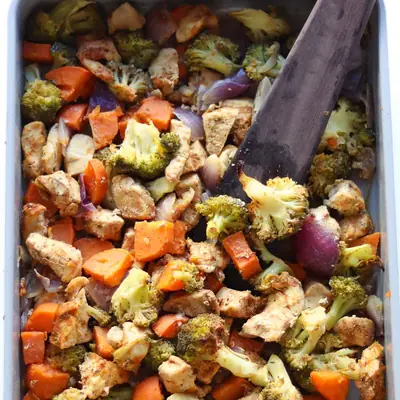

Baked Chicken and Sweet Potatoes

Ingredients
- 1 pound chicken breast or thighs, cut into bite-sized pieces
- 1 medium head of broccoli, cut into florets
- 1 medium sweet potato, cut into ½-inch pieces
- 1 small red onion, cut into 1-inch chunks
- 2 tablespoons avocado or olive oil
- 1 tablespoon honey or maple syrup
- 2 teaspoons dried oregano
- 1 teaspoon garlic powder
- 1 teaspoon cumin
- 1 teaspoon smoked paprika
- 1/2 teaspoon salt
Steps
- Preheat the oven to 400°F (200°C). Lightly grease or line a large baking dish.
- Add the chicken, broccoli, sweet potato, and onion.
- In a small bowl, whisk together the oil, honey (or maple syrup), oregano, garlic powder, cumin, salt, and smoked paprika. Pour the sauce over the chicken and vegetables, then toss well to coat evenly.
- Cover and bake for 10 minutes. Uncover and bake for another 10–15 minutes, or until the chicken is cooked through and the vegetables are tender.
Recipe by Min Kwon · Kidfriendly Meals, from MJ and Hungryman. Saved here for personal use; the original has the full notes, tips and photos. Open original